How to Automate "chaoxing.com"
Working：本文尚未完结
本文章所介绍的方法仅供参考，请确保阅读并完全同意重要声明[1][2]
概述
本文旨在介绍一套方法论，使得同学们可以搭建一个超星自动化刷课工具。并实现高效率挂机刷大水课。
目录
- 配置 chromium 内核浏览器
- 配置 Tampermonkey 插件
- 安装 超星學習通九九助手[一鍵啟動][最小化運行] 插件
- 如何刷课
- 【进阶】配置本地服务器
- 【进阶】配置题库
配置 Chromium 内核浏览器
为了顺利使用超星自动化刷课工具，首先需要在电脑上安装一个基于 Chromium 内核的浏览器。这是因为许多自动化脚本和插件依赖于 Chromium 提供的兼容性和功能。以下是几款常用的 Chromium 内核浏览器，你可以根据自己的需求选择：
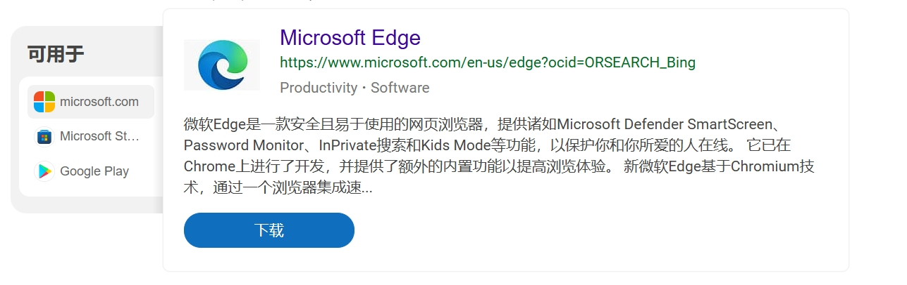
- Microsoft Edge 是 Windows 系统预制的浏览器。本文演示将基于 Edge 进行。
- Google Chrome 是全球使用最广泛的浏览器之一，以其快速的加载速度和丰富的扩展生态系统著称。
- Opera 是一款功能丰富的浏览器，内置 VPN 和广告拦截器等实用工具，提升用户隐私保护和浏览体验。
如果你不熟悉如何安装浏览器或对不同浏览器的选择存在疑问，可以参考微软官方提供的切换到 Microsoft Edge 以获取更好的浏览体验文章以学习Microsoft Edge的下载
配置 Tampermonkey 插件
Tampermonkey 是一款流行的浏览器扩展，允许用户在网页上运行自定义 JavaScript 脚本，实现自动化任务和个性化功能。下面笔者介绍在 Microsoft Edge 浏览器中获取 Tampermonkey 插件的三种方法：
方法一：从 Edge 官方插件商城获取
- 打开 Edge 浏览器。
- 在地址栏输入
edge://extensions/，打开 edge 管理扩展。 - 在页面的左下角，打开"开发者模式"，点击"获取扩展程序"链接。
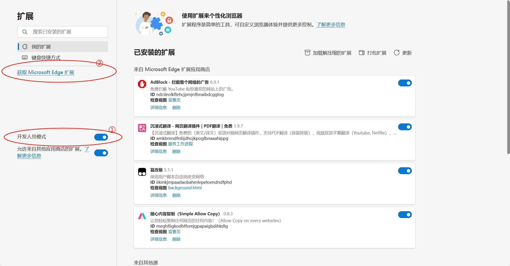
- 在 Edge 插件商城中，搜索"Tampermonkey"。
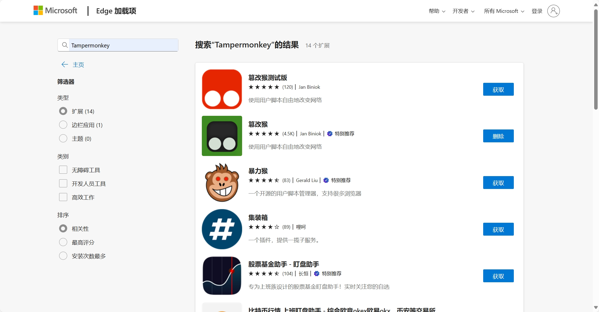
- 找到 Tampermonkey 插件，点击"获取"按钮。
- 确认安装，插件安装完成后，Tampermonkey 图标将出现在浏览器工具栏中。
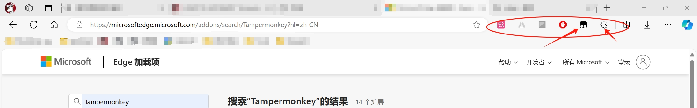
方法二：从极简插件网站获取
极简插件网站是Chrome浏览器扩展插件商店的搬运工，无需翻墙即可访问。
- 打开 Edge 浏览器。
- 访问极简插件。
- 通过搜索找到 Tampermonkey 插件。
- 点击"推荐下载"或"备用下载"按钮，获得包含插件的安装包，解压并获得插件文件。
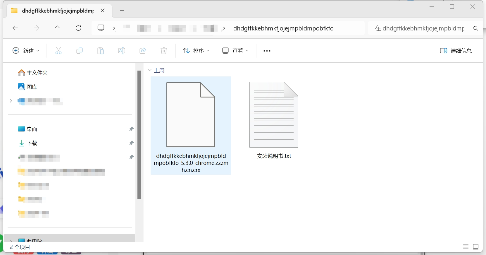
- 在地址栏输入
edge://extensions/，打开 edge 管理扩展，设置左侧的开发人员模式为开启。 - 将 Tampermonkey 插件从文件资源管理器拖入edge 管理扩展页面中。
- 确认安装，插件安装完成后，Tampermonkey 图标将出现在浏览器工具栏中。
方法三：从 Google Chrome 插件商城获取
本方法需要海外网络连接，请读者自行配置。
- 打开 Edge 浏览器。
- 访问 Google Chrome 插件商城。
- 在搜索框中输入"Tampermonkey"，按下 Enter 键。
- 找到 Tampermonkey 插件，点击""添加到 Chrome"按钮。
- 浏览器会提示你确认安装，点击""添加扩展程序"。
- 安装完成后，Tampermonkey 图标将出现在浏览器工具栏中。
安装 超星學習通九九助手[一鍵啟動][最小化運行] 插件
超星學習通九九助手[一鍵啟動][最小化運行] 插件仅作为一个演示插件，读者也可以自行选择更好的插件，并分享到评论区
超星学习通九九助手是一款用于自动化刷课的JavaScript 脚本，该脚本基于 Tampermonkey 插件运行。以下是安装该插件的方法：
从GreasyFork获取脚本
- 点击 Tampermonkey 插件图标。
- 点击获取新脚本，进入 Tampermonkey 脚本黄页
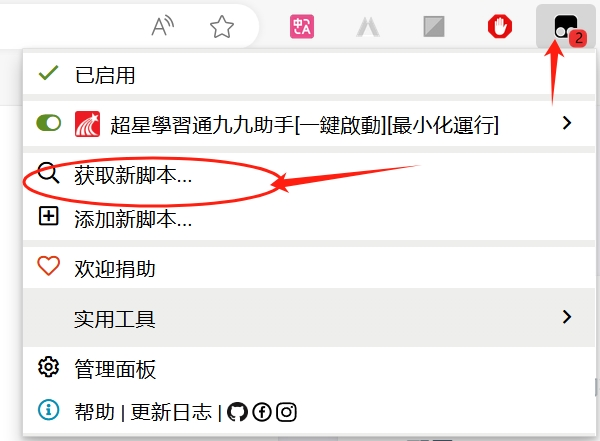
- 点击 GreasyFork 链接，进入 GreasyFork官网
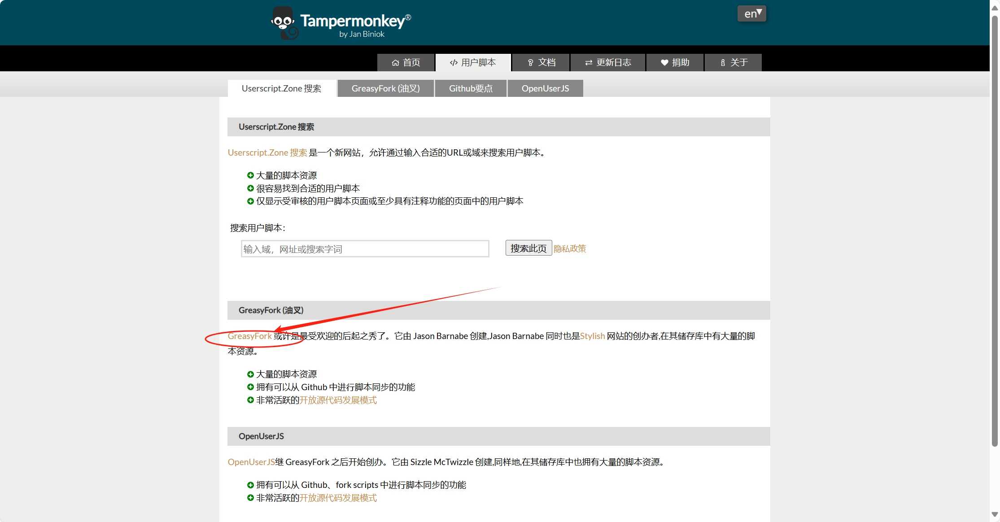
- 搜索""超星学习通九九助手"，找到该脚本页面，点击""安装"
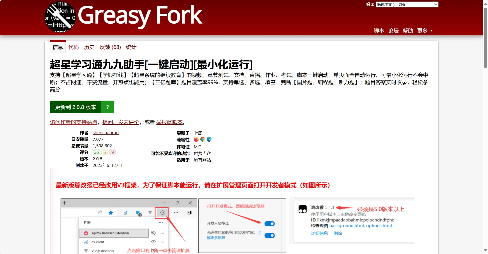
- 在弹出的 Tampermonkey 页面中，点击安装。
如何刷课
- 打开超星学习通。
- 登录账号，打开要刷的课。
- 点击弹出的刷课弹窗。
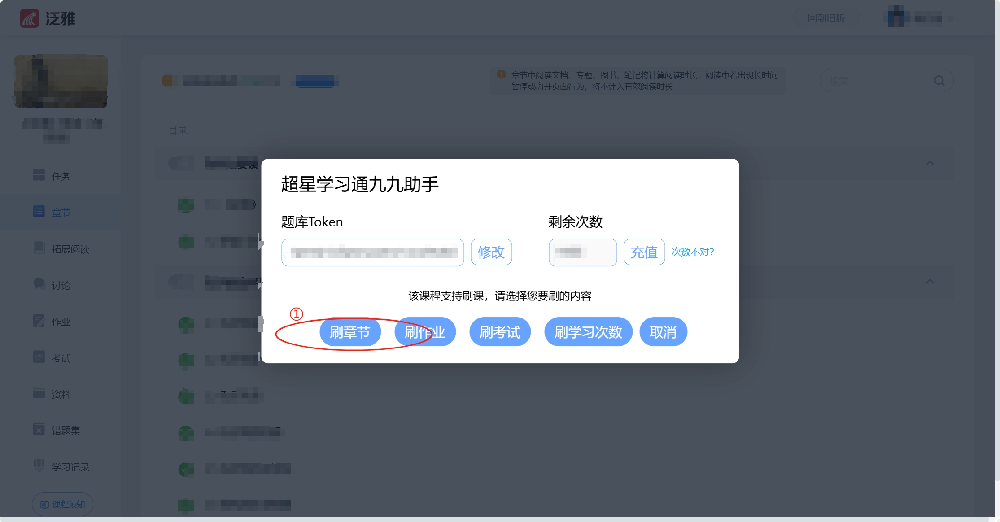
- 点击闯关模式开始刷课（读者可自行购买题库token）。
- 没有配置本地服务器的同学需要保持刷课页面是被选中状态
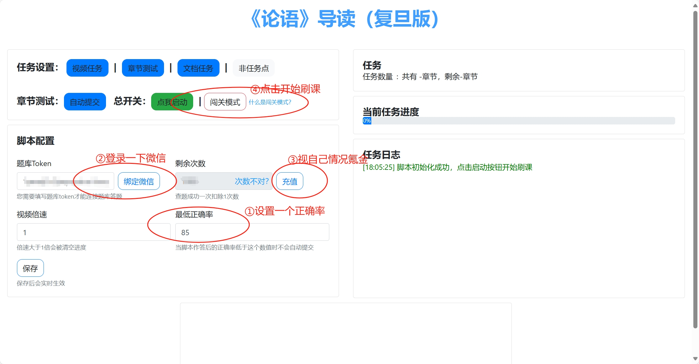
进阶
此部分笔者还未完成，但读者可以在以下页面找到支持：
- 【进阶】配置本地服务器
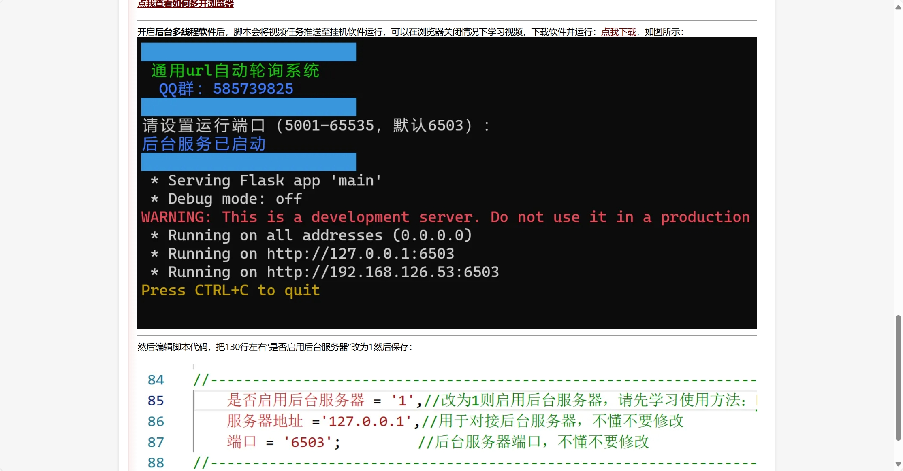
- 【进阶】配置题库
Reference
[1] 本文所介绍的内容仅作为技术探索和学习交流之用，意在分享一些关于自动化脚本和技术应用的知识与经验。文中涉及的所有操作方法、工具及第三方资源（包括但不限于自动化脚本、题库等），仅供读者参考，作者不对任何人在未经授权情况下使用这些工具、脚本或资源承担任何责任。请读者务必遵守相关法律法规及平台的使用规定，不得使用本文中的方法从事任何违反超星学习通平台规则、侵犯他人权益或不正当竞争的行为。任何因滥用这些技术导致的后果均由读者自行承担，与作者无关。
[2] 同时，本文所提及的第三方资源（如题库等）均为作者参考资料，作者不对其准确性、合法性、实时性等做出任何保证。请读者自行判断其有效性，并在合法合规的前提下使用。